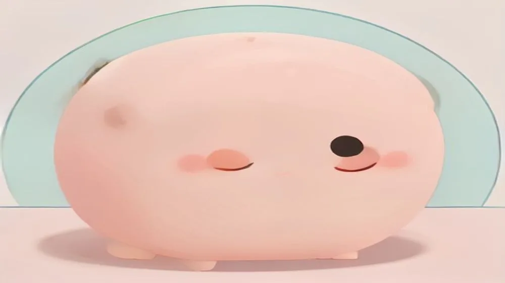

Why '서운하다' (Seo-un-hada) Isn't Just 'Disappointed'
오늘의 표현

표현: 서운하다
뜻: 가까운 사람의 행동이나 상황 때문에 기대했던 바가 채워지지 않아 마음이 아쉽고 서운함을 느끼는 감정입니다. 섭섭함이나 가벼운 실망감을 동반하기도 합니다.
사용 맥락: 주로 친구, 연인, 가족 등 친밀한 관계에서 상대방이 나를 충분히 고려하지 않았다고 느껴질 때 사용합니다. 직접적으로 화를 내기보다는 상대방에게 나의 서운한 마음을 부드럽게 전달하고 싶을 때 적합한 표현입니다.
왜 영어로 직역이 안 될까?
서운하다를 영어로 번역할 때 가장 가까운 단어는 'disappointed'나 'a little hurt' 정도일 것입니다. 하지만 이 단어들은 한국인의 '서운하다'가 담고 있는 미묘한 뉘앙스를 완벽하게 담아내지 못합니다.
'Disappointed'는 특정 사건이나 결과에 대한 일반적인 실망감을 나타낼 때 주로 쓰입니다. 반면, '서운하다'는 상대방과의 관계에서 오는 개인적인 아쉬움이나 섭섭함에 초점을 맞춥니다. 'You didn't think of me enough' 또는 'I expected more from you'와 같은 감정이 스며들어 있죠. 단순히 결과가 안 좋아서 실망한 것이 아니라, 그 관계 안에서 내가 존중받지 못했거나 배려받지 못했다고 느끼는 감정입니다.
'A little hurt'보다도 덜 날카로운 감정이며, 심각한 갈등으로 번지기보다는 '내 마음을 알아주면 좋겠다'는 바람이 담겨있는 경우가 많습니다. 한국인이 이 말을 쓸 때는 종종 상대방이 스스로 나의 감정을 헤아려주기를 바라는 마음이 깔려 있습니다.
한국인은 어떤 상황에서 쓸까?
- 친구가 나만 빼고 놀러 갔을 때:
“너희끼리만 영화 보러 갔더라? 나한테는 말도 안 해주고… 솔직히 좀 서운하다.” (You guys went to the movies without me? You didn't even tell me… Honestly, I feel a bit 서운하다.)
- 연인이 중요한 약속을 잊었을 때:
“어제 우리 기념일이었는데, 네가 깜빡했더라? 진짜 서운했어.” (Yesterday was our anniversary, and you forgot? I was really 서운하다.)
문화 이야기
'서운하다'는 한국인의 '정(情)' 문화와 깊은 관계가 있습니다. 한국에서는 가까운 사람들과 '정'을 나누며 서로에게 깊이 기대고 배려하는 것이 중요합니다.
이러한 기대가 충족되지 않았을 때, 직접적으로 불만을 표출하기보다 '서운하다'는 표현을 통해 간접적으로 아쉬움을 드러냅니다. 이는 관계를 깨지 않으면서도 자신의 감정을 전달하려는 한국인 특유의 소통 방식이기도 합니다. 상대방이 이 감정을 알아주고 다음에는 더 배려해주기를 바라는 마음이 담겨 있습니다.
여러분의 언어에서는 어떤가요?
가까운 친구나 연인이 나를 충분히 배려하지 않았을 때 느끼는, 심각한 화는 아니지만 섭섭하고 아쉬운 이 감정을 여러분의 언어로는 뭐라고 표현하시나요?
혹시 이런 감정을 정확히 지칭하는 단어가 없다면, 어떻게 설명해야 가장 비슷하게 전달할 수 있을까요?
🔗 이 글도 함께 보면 좋아요: Why '답답하다' (Dapdap-hada) Is More Than Just 'Frustrated' or 'Stuffy'